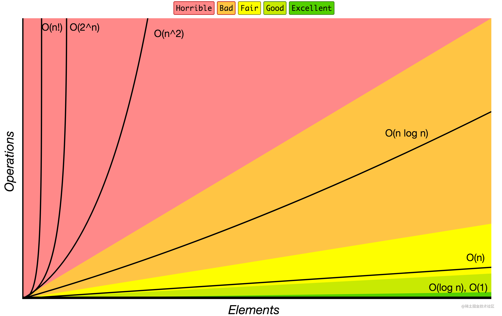
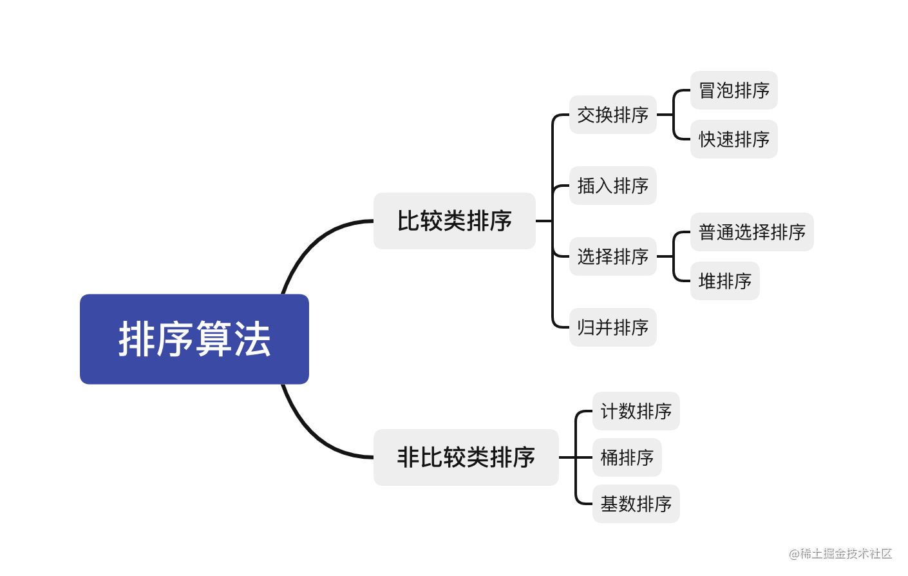
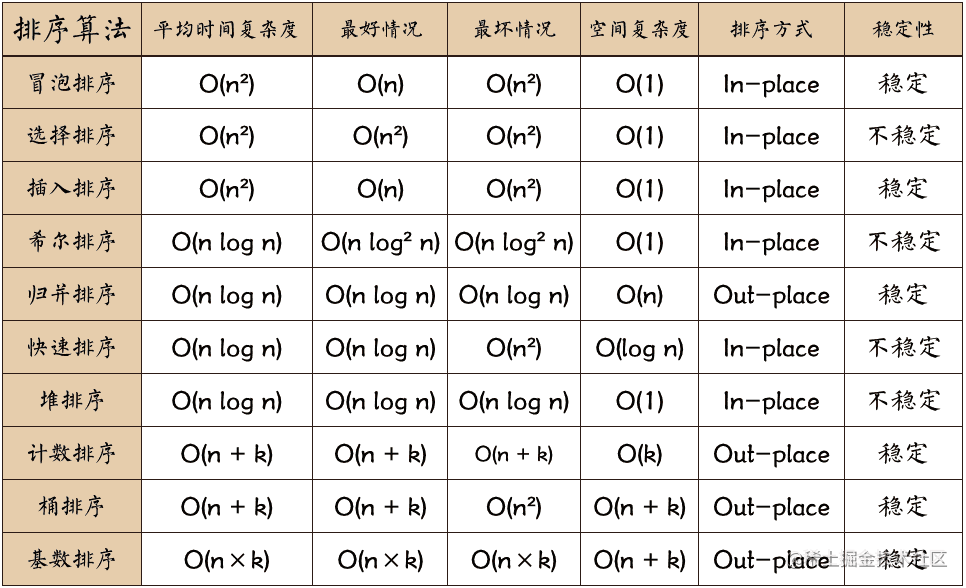

JavaScript中的 sort 方法是怎么实现的？
参考答案
本答案将介绍js中常用的几种排序算法，并结合v8中相关源码分析sort实现的策略
常见排序算法
首先温习下排序算法需要关注的两大要素
时间复杂度
描述该算法的运行时间，通常用大O描述，附上一张时间复杂度曲线图帮助理解

空间复杂度
度量一个算法在运行过程中占用存储空间大小
常见排序
常见的十大经典排序算法就不在这科普了，根据特性可将它们从不同角度进行分类
- 是否基于比较：比较类排序和非比较类排序
- 是否稳定：稳定类排序和不稳定类排序
通常我们从是否基于排序的视角进行分类
- 比较类排序
通过比较来决定元素间的相对次序，其时间复杂度不能突破 O(nlogn)，因此也称为非线性时间比较类排序。
- 非比较类排序
不通过比较来决定元素间的相对次序，它可以突破基于比较排序的时间下界，以线性时间运行，因此也称为线性时间非比较类排序。
具体分类枚举可以结合下图理解

接下来我们写下几个常见的经典排序
快速排序
快速排序主要使用递归分支的思想，通过一趟排序，将待排记录分隔成独立的两部分，其中一部分记录的关键字均比另一部分的关键字小，则可以分别对这两部分记录继续进行排序，以达到整个序列有序。
var a = [ 25, 76, 34, 232, 6, 456, 221];
function quickSort(array) {
var quick = function(arr) {
if (arr.length <= 1) return arr
const index = Math.floor(len >> 1)
const pivot = arr.splice(index, 1)[0]
const left = []
const right = []
for (let i = 0; i < arr.length; i++) {
if (arr[i] > pivot) {
right.push(arr[i])
} else if (arr[i] <= pivot) {
left.push(arr[i])
}
}
return quick(left).concat([pivot], quick(right))
}
const result = quick(array)
return result
}
quickSort(a);// [ 6, 25, 34, 76, 221, 232, 456]堆排序
堆排序是指利用堆这种数据结构所设计的一种排序算法。堆积是一个近似完全二叉树的结构，并同时满足堆积的性质，即子结点的键值或索引总是小于（或者大于）它的父节点。堆的底层实际上就是一棵完全二叉树，可以用数组实现。
根节点最大的堆叫作大根堆，根节点最小的堆叫作小根堆，你可以根据从大到小排序或者从小到大来排序，分别建立对应的堆就可以。请看下面的代码。
var a = [25, 76, 34, 232, 6, 456, 221];
function heap_sort(arr) {
var len = arr.length
var k = 0
function swap(i, j) {
var temp = arr[i]
arr[i] = arr[j]
arr[j] = temp
}
function max_heapify(start, end) {
var dad = start
var son = dad * 2 + 1
if (son >= end) return
if (son + 1 < end && arr[son] < arr[son + 1]) {
son++
}
if (arr[dad] <= arr[son]) {
swap(dad, son)
max_heapify(son, end)
}
}
for (var i = Math.floor(len / 2) - 1; i >= 0; i--) {
max_heapify(i, len)
}
for (var j = len - 1; j > k; j--) {
swap(0, j)
max_heapify(0, j)
}
return arr
}
heap_sort(a); // [6, 25, 34, 76, 221, 232, 456]归并排序
归并排序是建立在归并操作上的一种有效的排序算法，该算法是采用分治法的一个非常典型的应用。将已有序的子序列合并，得到完全有序的序列；先使每个子序列有序，再使子序列段间有序。若将两个有序表合并成一个有序表，称为二路归并。
var a = [25, 76, 34, 232, 6, 456, 221];
function mergeSort(array) {
const merge = (right, left) => {
const result = []
let il = 0
let ir = 0
while (il < left.length && ir < right.length) {
if (left[il] < right[ir]) {
result.push(left[il++])
} else {
result.push(right[ir++])
}
}
while (il < left.length) {
result.push(left[il++])
}
while (ir < right.length) {
result.push(right[ir++])
}
return result
}
const mergeSort = array => {
if (array.length === 1) { return array }
const mid = Math.floor(array.length / 2)
const left = array.slice(0, mid)
const right = array.slice(mid, array.length)
return merge(mergeSort(left), mergeSort(right))
}
return mergeSort(array)
}
mergeSort(a); // [6, 25, 34, 76, 221, 232, 456]
最后附上一张各排序算法统计对照表:

js中的sort方法
sort方法基本使用
arr.sort([compareFunction])
如果不传入 compareFunction，则元素按照转换为字符串的各个字符的 Unicode 位点进行排序，有些同学经常在整数排序上犯错误，多半是因为遗漏了这一规则
const names = ['tom', 'jesse', 'jack'];
names.sort();
console.log(names);
// ["jack", "jesse", "tom"]
const array1 = [1, 30, 4, 21, 100000];
array1.sort();
console.log(array1);
// [1, 100000, 21, 30, 4]如果指明了 compareFunction 参数 ，那么数组会按照调用该函数的返回值排序，即 a 和 b 是两个将要被比较的元素：
- compareFunction（a, b）< 0，a 会被排列到 b 之前
- compareFunction（a, b）=== 0，a 和 b 的相对位置不变
- compareFunction（a, b）> 0，b 会被排列到 a 之前
sort源码分析
查阅 v8源码sort部分 我们可以发现，对于需要排序的元素个数n，具体排序策略有几下中情形：
- 当 n<=10 时，采用
插入排序； - 当 n>10 时，采用
三路快速排序； - 10<n <=1000，采用中位数作为哨兵元素；
- n>1000，每隔 200~215 个元素挑出一个元素，放到一个新数组中，然后对它排序，找到中间位置的数，以此作为中位数。
乍一看结论你可能会纠结两个问题
1、为何元素较少的时候要用快排
其实仔细分析一下不难究其原因。对于插排和快排，理论上的平均时间复杂度分别为O(n^2)和O(nlogn)，其中插排在最好情况下的时间复杂度是 O(n)。对比不难得出结论，当n足够小的时候，快排优势变小。事实上插排经优化后对于小数据集的排序性能可以超过快排。
2、为何要选择哨兵元素
因为快速排序的性能瓶颈在于递归的深度，最坏的情况是每次的哨兵都是最小元素或者最大元素，那么进行 partition（一边是小于哨兵的元素，另一边是大于哨兵的元素）时，就会有一边是空的。如果这么排下去，递归的层数就达到了 n , 而每一层的复杂度是 O(n)，因此快排这时候会退化成 O(n^2) 级别。
这种情况是要尽力避免的，那么如何来避免？就是让哨兵元素尽可能地处于数组的中间位置，让最大或者最小的情况尽可能少
最后我们看下源码中的sort的基本结构
function ArraySort(comparefn) {
CHECK_OBJECT_COERCIBLE(this,"Array.prototype.sort");
var array = TO_OBJECT(this);
var length = TO_LENGTH(array.length);
return InnerArraySort(array, length, comparefn);
}
function InnerArraySort(array, length, comparefn) {
// 比较函数未传入
if (!IS_CALLABLE(comparefn)) {
comparefn = function (x, y) {
if (x === y) return 0;
if (%_IsSmi(x) && %_IsSmi(y)) {
return %SmiLexicographicCompare(x, y);
}
x = TO_STRING(x);
y = TO_STRING(y);
if (x == y) return 0;
else return x < y ? -1 : 1;
};
}
function InsertionSort(a, from, to) {
// 插入排序
for (var i = from + 1; i < to; i++) {
var element = a[i];
for (var j = i - 1; j >= from; j--) {
var tmp = a[j];
var order = comparefn(tmp, element);
if (order > 0) {
a[j + 1] = tmp;
} else {
break;
}
}
a[j + 1] = element;
}
}
function GetThirdIndex(a, from, to) { // 元素个数大于1000时寻找哨兵元素
var t_array = new InternalArray();
var increment = 200 + ((to - from) & 15);
var j = 0;
from += 1;
to -= 1;
for (var i = from; i < to; i += increment) {
t_array[j] = [i, a[i]];
j++;
}
t_array.sort(function(a, b) {
return comparefn(a[1], b[1]);
});
var third_index = t_array[t_array.length >> 1][0];
return third_index;
}
function QuickSort(a, from, to) { // 快速排序实现
//哨兵位置
var third_index = 0;
while (true) {
if (to - from <= 10) {
InsertionSort(a, from, to); // 数据量小，使用插入排序，速度较快
return;
}
if (to - from > 1000) {
third_index = GetThirdIndex(a, from, to);
} else {
// 小于1000 直接取中点
third_index = from + ((to - from) >> 1);
}
// 下面开始快排
var v0 = a[from];
var v1 = a[to - 1];
var v2 = a[third_index];
var c01 = comparefn(v0, v1);
if (c01 > 0) {
var tmp = v0;
v0 = v1;
v1 = tmp;
}
var c02 = comparefn(v0, v2);
if (c02 >= 0) {
var tmp = v0;
v0 = v2;
v2 = v1;
v1 = tmp;
} else {
var c12 = comparefn(v1, v2);
if (c12 > 0) {
var tmp = v1;
v1 = v2;
v2 = tmp;
}
}
a[from] = v0;
a[to - 1] = v2;
var pivot = v1;
var low_end = from + 1;
var high_start = to - 1;
a[third_index] = a[low_end];
a[low_end] = pivot;
partition: for (var i = low_end + 1; i < high_start; i++) {
var element = a[i];
var order = comparefn(element, pivot);
if (order < 0) {
a[i] = a[low_end];
a[low_end] = element;
low_end++;
} else if (order > 0) {
do {
high_start--;
if (high_start == i) break partition;
var top_elem = a[high_start];
order = comparefn(top_elem, pivot);
} while (order > 0);
a[i] = a[high_start];
a[high_start] = element;
if (order < 0) {
element = a[i];
a[i] = a[low_end];
a[low_end] = element;
low_end++;
}
}
}
// 快排的核心思路，递归调用快速排序方法
if (to - high_start < low_end - from) {
QuickSort(a, high_start, to);
to = low_end;
} else {
QuickSort(a, from, low_end);
from = high_start;
}
}
}JavaScript 中的 sort 方法用于对数组中的元素进行排序。它接受一个可选的比较函数作为参数，如果没有提供比较函数，则默认按照字符串Unicode码点进行升序排列。
以下是 sort 方法的实现原理：
- 类型排序：首先比较数组中相邻元素的类型。如果类型不同，则返回一个非零值，使得较小的类型在排序后位于前面。如果类型相同，则比较它们的原始值。
- 原始值排序：如果两个元素的类型相同，则比较它们的原始值。原始值指的是数组元素的值在
sort方法被调用前的值。如果原始值不同，则返回一个非零值，使得较小的原始值在排序后位于前面。 - 比较函数：如果提供了比较函数，则
sort方法会使用这个函数来比较数组中相邻元素的值。比较函数必须返回一个负、零或正整数，表示第一个参数应排在第二个参数之前、两者相等或之后。
下面是一个简单的 sort 方法实现的例子：
function sort(array, compareFunction) {
if (compareFunction) {
for (let i = 0; i < array.length - 1; i++) {
for (let j = 0; j < array.length - i - 1; j++) {
if (compareFunction(array[j], array[j + 1]) > 0) {
// 如果 compareFunction 返回大于 0 的值，则交换 array[j] 和 array[j + 1]
[array[j], array[j + 1]] = [array[j + 1], array[j]];
}
}
}
} else {
for (let i = 0; i < array.length - 1; i++) {
for (let j = 0; j < array.length - i - 1; j++) {
if (array[j] > array[j + 1]) {
// 如果元素值大于相邻元素，则交换它们
[array[j], array[j + 1]] = [array[j + 1], array[j]];
}
}
}
}
return array;
}这个例子展示了基本的冒泡排序算法，它是 sort 方法的一种可能的实现方式。需要注意的是，这个实现并不是 JavaScript 引擎内部 sort 方法的具体实现，而是一个简单的示例。实际上的实现可能会有所不同，并且可能使用了更高效的排序算法。
在 JavaScript 引擎内部，sort 方法通常会使用一个稳定的排序算法，如快速排序或归并排序，以保证排序的效率和稳定性。此外，JavaScript 引擎还会处理各种边界情况，如数组为空、数组只有一个元素等，以及可能的性能优化。